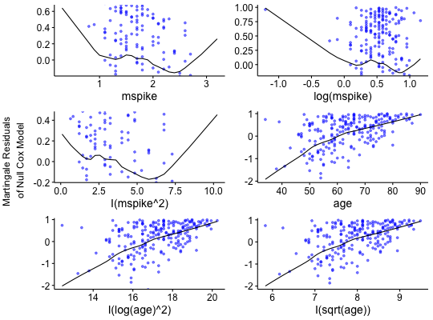
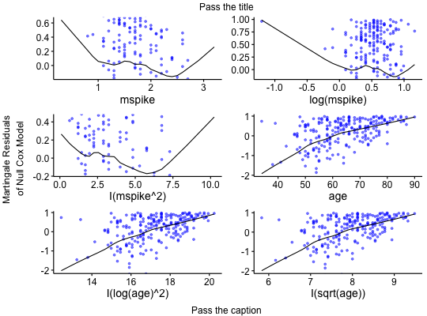

Displays graphs of continuous explanatory variable against martingale residuals of null
cox proportional hazards model, for each term in of the right side of formula. This might help to properly
choose the functional form of continuous variable in cox model (coxph). Fitted lines with lowess function
should be linear to satisfy cox proportional hazards model assumptions.
ggcoxfunctional(formula, data = NULL, fit, iter = 0, f = 0.6, point.col = "red", point.size = 1, point.shape = 19, point.alpha = 1, xlim = NULL, ylim = NULL, ylab = "Martingale Residuals \nof Null Cox Model", title = NULL, caption = NULL, ggtheme = theme_survminer(), ...) # S3 method for ggcoxfunctional print(x, ..., newpage = TRUE)
data.frame in which to interpret the variables named in the formula,top in arrangeGrob)bottom in arrangeGrob)theme.ggpar for customizing the plot.grid.arrange.Returns an object of class ggcoxfunctional which is a list of ggplots.
ggcoxfunctional: Functional Form of Continuous Variable in Cox Proportional Hazards Model.
library(survival) data(mgus) res.cox <- coxph(Surv(futime, death) ~ mspike + log(mspike) + I(mspike^2) + age + I(log(age)^2) + I(sqrt(age)), data = mgus) ggcoxfunctional(res.cox, data = mgus, point.col = "blue", point.alpha = 0.5)ggcoxfunctional(res.cox, data = mgus, point.col = "blue", point.alpha = 0.5, title = "Pass the title", caption = "Pass the caption")